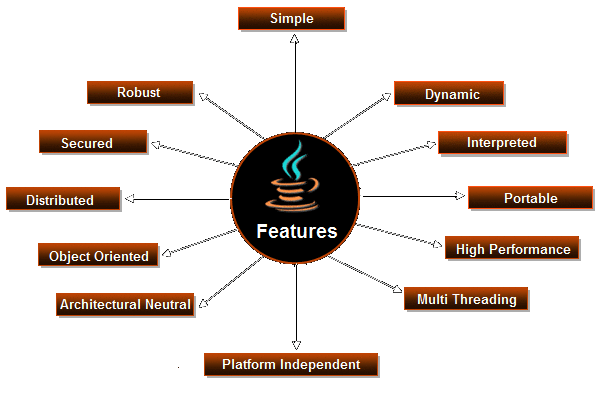

java
links
- main page
- php
- Java
- C
- p4
introduction
Java is a programming language created by James Gosling from Sun Microsystems (Sun) in 1991. The target of Java is to write a program once and then run this program on multiple operating systems. The first publicly available version of Java (Java 1.0) was released in 1995. Sun Microsystems was acquired by the Oracle Corporation in 2010. Oracle has now the steermanship for Java. In 2006 Sun started to make Java available under the GNU General Public License (GPL). Oracle continues this project called OpenJDK.
Over time new enhanced versions of Java have been released. The current version of Java is Java 1.8 which is also known as Java 8.
Java is defined by a specification and consists of a programming language, a compiler, core libraries and a runtime (Java virtual machine) The Java runtime allows software developers to write program code in other languages than the Java programming language which still runs on the Java virtual machine. The Java platform is usually associated with the Java virtual machine and the Java core libraries.
The Java language was designed with the following properties:
Platform independent: Java programs use the Java virtual machine as abstraction and do not access the operating system directly. This makes Java programs highly portable. A Java program (which is standard-compliant and follows certain rules) can run unmodified on all supported platforms, e.g., Windows or Linux.
Object-orientated programming language: Except the primitive data types, all elements in Java are objects.
Strongly-typed programming language: Java is strongly-typed, e.g., the types of the used variables must be pre-defined and conversion to other objects is relatively strict, e.g., must be done in most cases by the programmer.
Interpreted and compiled language: Java source code is transferred into the bytecode format which does not depend on the target platform. These bytecode instructions will be interpreted by the Java Virtual machine (JVM). The JVM contains a so called Hotspot-Compiler which translates performance critical bytecode instructions into native code instructions.
Automatic memory management: Java manages the memory allocation and de-allocation for creating new objects. The program does not have direct access to the memory. The so-called garbage collector automatically deletes objects to which no active pointer exists.
The Java syntax is similar to C++. Java is case-sensitive, e.g., variables called myValue and myvalue are treated as different variables.
Advantages
i. Simple
Java was design to straightforward to use, write, compile, debug, and learn than alternative programming languages. Java is far less complicated than C++ as a result of Java uses automatic memory allocation and garbage collection.
ii. Object-Oriented
Permits you to form standard programs and reusable code
iii. Platform-Independent
Ability to maneuver simply from one system to a different.
iv. Distributed
Designed to create distributed computing straightforward with the networking capability that’s inherently integrated into it.
v. Secure
The Java language focus on security, compiler, interpreter, and runtime surroundings were every develope.
vi. Allocation
Java has the feature of Stack Allocation System. It helps the information to keep and might restore simply.
vii. Multithreaded
The potential for a program to perform many tasks at the same time at intervals a program.
DisAavantages
i. Performance
A lot of memory-consuming than natively compiled languages reminiscent of C or C++ and a bit slower.
ii. Look and Feel
The default look and feel of graphical user interface applications written in Java using the Swing toolkit are extremely completely different from native applications.
iii. Single Paradigm Language
Static imports were added in Java 5.0 the procedural paradigm is better accommodated than in earlier versions of Java.
So, this was all about Pros and Cons of Java. Hope you like our explanation.
Conclusion
Hence, in this Java tutorial, we studied major pros and cons of Java language. These advantages and disadvantages of Java will help us to understand and learn Java Programming Language easily.